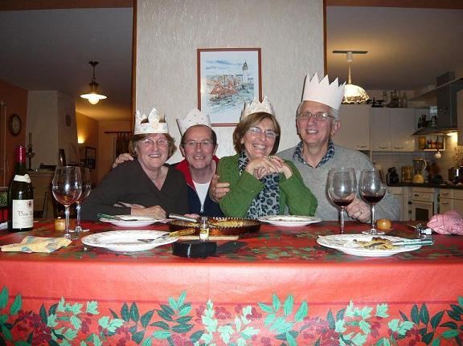

Recette n°167 : galette des rois

Ingrédients :
pour 6 personnes (les quantités ne sont pas vraiment critiques,
sauf en ce qui concerne l'arôme d'amande amère dont il ne
faut pas trop mettre)
- 2 pâtes
feuilletées pur beurre du commerce
- 125 g d'amandes émondées
- 150 g de sucre semoule
- 3 oeufs
- 150 g de beurre
- 1/2 cuiller à café d'arôme d'amande amère
- une fève (à défaut, un bouton de culotte
passé à l'eau
bouillante)
Préparation :
01 - mélanger intimement amandes et sucre
02 - préchauffer le four à 190C (th 6)
03 - faire fondre le beurre, le mélanger à la cuiller de
bois (surtout ne pas passer
au mixer car cela compacifie) avec le
mélange amandes-sucre
04 - battre deux oeufs entiers, les mélanger à la cuiller
de bois (surtout ne pas
passer au mixer car cela compacifie) au
mélange précédent
05 - casser le troisième oeuf, séparer blanc et jaune,
réserver le jaune (le blanc ne sera pas utilisé dans la
recette)
06 - incorporer la demi-cuiller à café d'arôme
d'amande amère (surtout
ne pas passer au mixer car cela compacifie) ; la frangipane est
prête
07 - étaler une des deux pâtes feuilletée, et la
découper au diamètre du moule (utiliser le moule à
l'envers comme pochoir), la réserver comme future couverture
08 - étaler la seconde pâte feuilletée sur son
papier sulfurisé, la soulever délicatement par parties et
saupoudrer le papier de sucre en poudre*, la remettre à plat
*ce sucre en poudre entre le papier
sulfurisé et
le fond de la tarte donne un aspect et un goût
caramélié à la tarte
09 - dans le moule, mettre cette seconde pâte feuilletée
sur son papier sulfurisé et en relever les bords le long du moule
10 - découper aux ciseaux le papier qui dépasse
11 - recouvrir la pâte dans le moule avec la frangipane la
frangipane
12 - y enfoncer la fève (le bouton de culotte)
13 - étaler la seconde pâte feuilletée sur la
première en enlevant son papier sulfurisé
14 - tracer une rosace à la pointe du couteau
15 - dorer le dessus avec le jaune d'oeuf qu'on a réservé
16 - enfourner, cuire 30 mn (pas davantage, pas moins non plus).
Observations :
- recette exécutée le 5 janvier 2008 à Quiberon
pour Michel et Andrée du Bourny et nous deux ; excellent
- recette exécutée aussi le 13 janvier 2008 à
Rennes
pour Annie de l'Allée de Chevré et nous deux ; excellent
encore